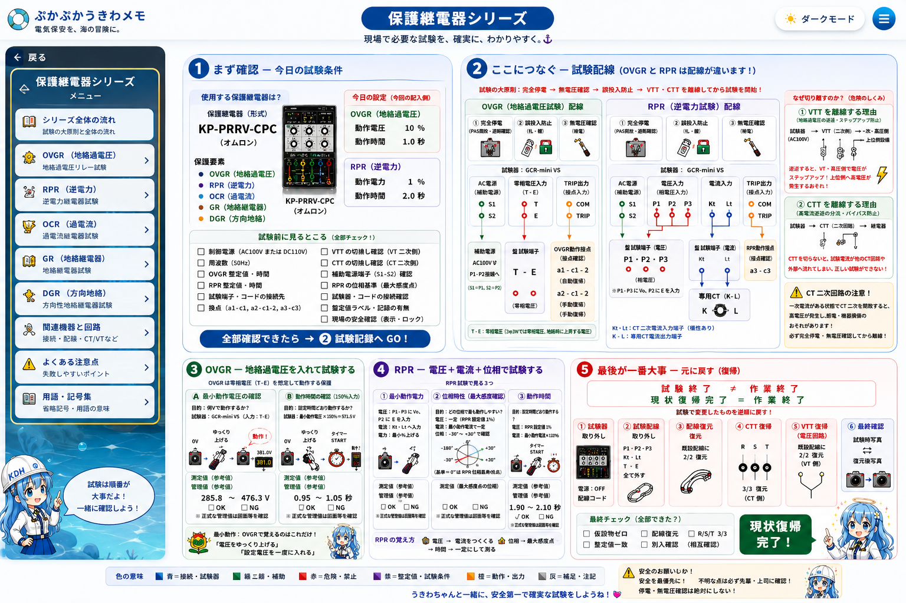

地絡過電圧継電器
零相電圧を使った地絡監視通常時零相電圧が整定値未満
試験開始試験電圧を徐々に上げる
検出整定値到達で継電器動作
接点動作接点を確認
時限設定時限を確認
復帰入力を下げて復帰確認
主な入力
T-E 等の零相電圧入力
T-E 等の零相電圧入力
確認ポイント
最小動作電圧、動作時間、接点動作
最小動作電圧、動作時間、接点動作
試験の大原則と、OVGR・RPRを中心とした配線・試験・復帰の流れを整理します。

画像内の重要事項を、読めるHTML文字でも整理しています。画像内の細かな文字が端末で潰れても、学習の流れはここで確認できます。
制御電源、周波数、継電器整定値・時限、試験端子、VTT・CTTの切替、補助電源端子、コード接続先、記録用紙、安全確保を確認します。
過電流を検出し、整定電流と時限特性に従って動作する保護継電器として整理します。
地絡電流を検出する基本的な保護要素として整理します。実際の試験内容は継電器形式と回路構成を確認して扱います。
零相電圧と零相電流の位相関係から、地絡事故の方向を判定する保護要素として整理します。